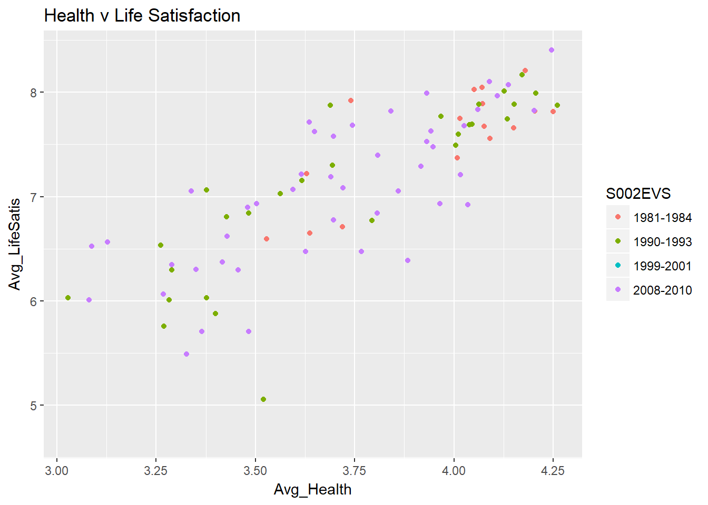
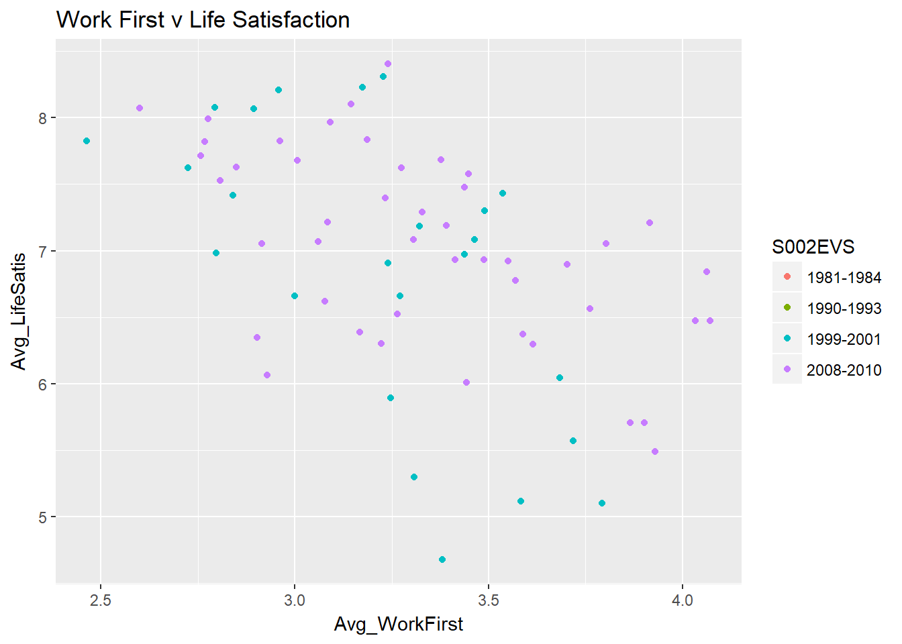
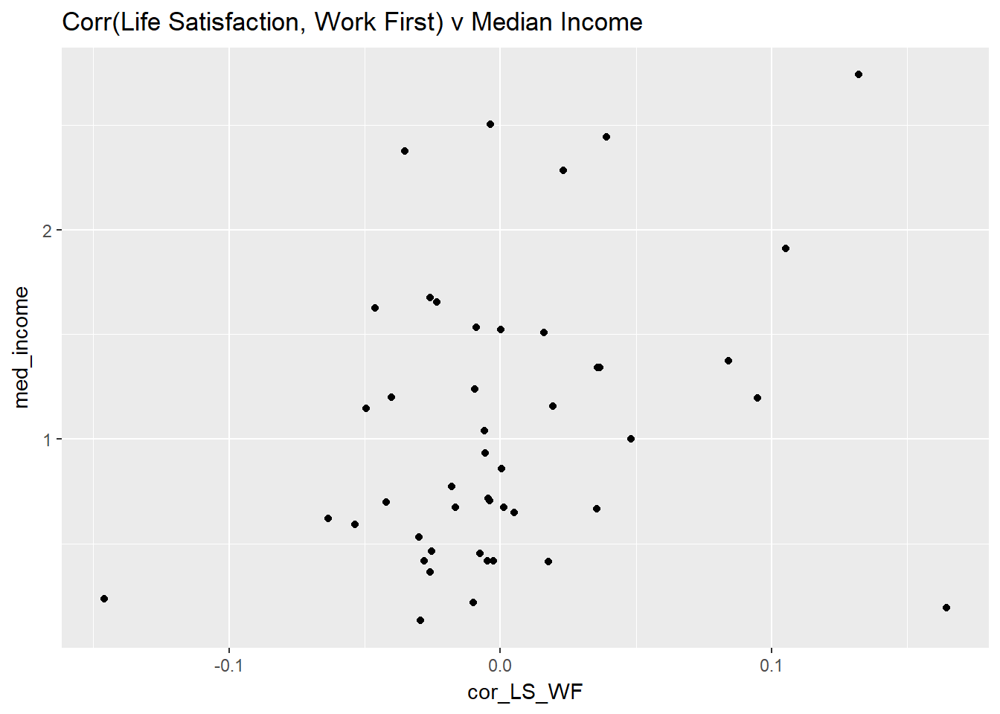
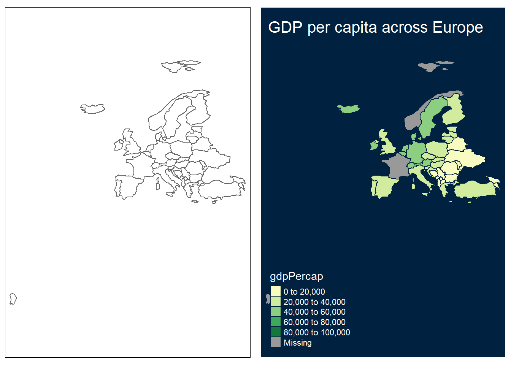
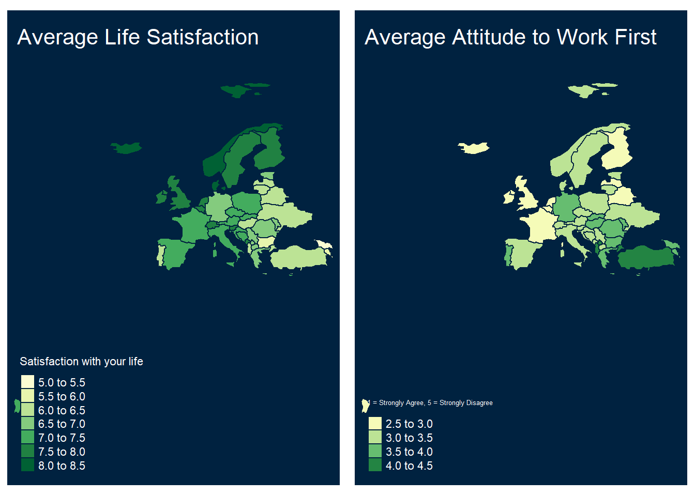
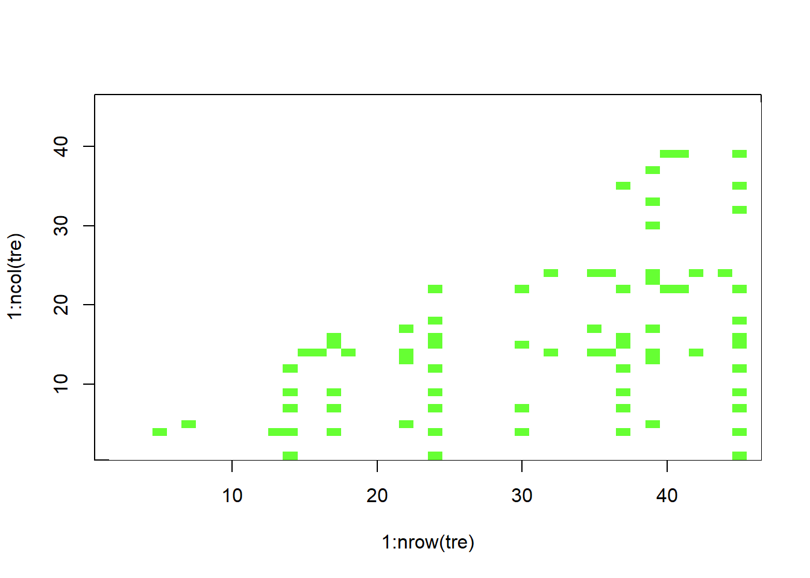
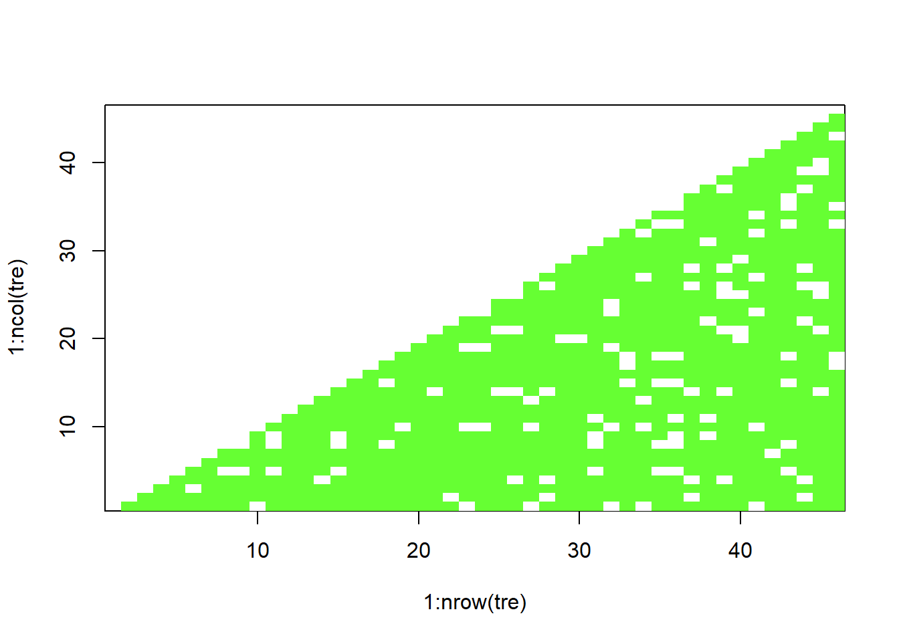
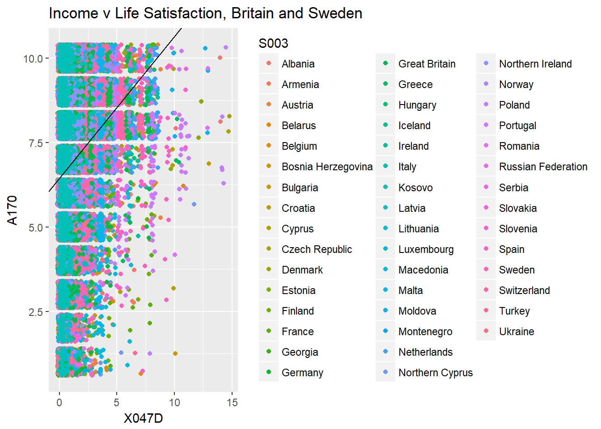

We add the basic libraries needed for this week’s work:
library(tidyverse) # for almost all data handling tasks
library(readxl) # to import Excel data
library(ggplot2) # to produce nice graphiscs
library(stargazer) # to produce nice results tablesThe example we are using here is taken from the CORE - Doing Economics resource. In particular we are using Project 8 which deals with international data on well-being. The data represent several waves of data from the European Value Study (EVS). A wave means that the same surevey is repeated at regular intervals (waves).
In this lesson we will revise some hypothesis testing and basic (simple) regression analysis.
The data have been prepared as demonstrated in the Doing Economics Project 8, up to and including Walk-Through 8.3. Please have a look at this to understand the amount of data work required before an empirical analysis can begin. The datafile is saved as an R data structure (wb_data.Rdata).
#wb_data <- readRDS("wellbeing_data.RDS") # load RDS file
load("WBdata.Rdata")
str(wb_data) # prints some basic info on variables## Classes 'tbl_df', 'tbl' and 'data.frame': 129515 obs. of 19 variables:
## $ S002EVS : chr "1981-1984" "1981-1984" "1981-1984" "1981-1984" ...
## $ S003 : chr "Belgium" "Belgium" "Belgium" "Belgium" ...
## $ S006 : num 1001 1002 1003 1004 1005 ...
## $ A009 : num 3 5 2 5 5 5 5 5 4 4 ...
## $ A170 : num 9 9 3 9 9 9 9 10 8 10 ...
## $ C036 : num NA NA NA NA NA NA NA NA NA NA ...
## $ C037 : num NA NA NA NA NA NA NA NA NA NA ...
## $ C038 : num NA NA NA NA NA NA NA NA NA NA ...
## $ C039 : num NA NA NA NA NA NA NA NA NA NA ...
## $ C041 : num NA NA NA NA NA NA NA NA NA NA ...
## $ X001 : chr "Male" "Male" "Male" "Female" ...
## $ X003 : num 53 30 61 60 60 19 38 39 44 76 ...
## $ X007 : chr "Single/Never married" "Married" "Separated" "Married" ...
## $ X011_01 : num NA NA NA NA NA NA NA NA NA NA ...
## $ X025A : chr NA NA NA NA ...
## $ Education_1: num NA NA NA NA NA NA NA NA NA NA ...
## $ Education_2: chr NA NA NA NA ...
## $ X028 : chr "Full time" "Full time" "Unemployed" "Housewife" ...
## $ X047D : num NA NA NA NA NA NA NA NA NA NA ...Checking your environment you will see two objects. Along the proper datafile (wb_data) you will find wb_data_Des which contains some information for each of the variables. It will help us to navigate the obscure variable names.
wb_data_Des## Names Labels
## 1 S002EVS EVS-wave
## 2 S003 Country/region
## 3 S006 Respondent number
## 4 A009 Health
## 5 A170 Life satisfaction
## 6 C036 Work Q1
## 7 C037 Work Q2
## 8 C038 Work Q3
## 9 C039 Work Q4
## 10 C041 Work Q5
## 11 X001 Sex
## 12 X003 Age
## 13 X007 Marital status
## 14 X011_01 Number of children
## 15 X025A Education
## 16 Education_1 Education category
## 17 Education_2 Education Description
## 18 X028 Employment
## 19 X047D Monthly household income
## Description
## 1 EVS-wave
## 2 Country/region
## 3 Original respondent number
## 4 State of health (subjective), 1 = Very Poor, 5 = Very good
## 5 Satisfaction with your life
## 6 To develop talents you need to have a job, 1 = Strongly Agree, 5 = Strongly Disagree
## 7 Humiliating to receive money without having to work for it, 1 = Strongly Agree, 5 = Strongly Disagree
## 8 People who don't work become lazy, 1 = Strongly Agree, 5 = Strongly Disagree
## 9 Work is a duty towards society, 1 = Strongly Agree, 5 = Strongly Disagree
## 10 Work should come first even if it means less spare time, 1 = Strongly Agree, 5 = Strongly Disagree
## 11 Sex
## 12 Age
## 13 Marital status
## 14 How many children you have-deceased children not included
## 15 Educational level respondent: ISCED-code one digit
## 16 Educational ISCED-code one digit
## 17 Education level description
## 18 Employment status
## 19 Monthly household income (? 1,000), corrected for ppp in eurosAs you can see there are a number of interesting questions in this dataset. These questions will allow us to investigate whether attitudes to work differ between coountries and whether such differences correlate to different levels of self-reported happiness/life satisfaction.
Details on the variables are avialable from here (chose EVS Longitudinal Data Files 1981-2008).
Let us investigate some of the features of this dataset. It has 129515 observations and 19 variables. Let’s see which countries are represented in our dataset.
unique(wb_data$S003) # unque finds all the different values in a variable## [1] "Belgium" "Canada" "Denmark"
## [4] "France" "Germany" "Iceland"
## [7] "Ireland" "Italy" "Malta"
## [10] "Netherlands" "Norway" "Spain"
## [13] "Sweden" "Great Britain" "United States"
## [16] "Northern Ireland" "Austria" "Bulgaria"
## [19] "Czech Republic" "Estonia" "Finland"
## [22] "Hungary" "Latvia" "Lithuania"
## [25] "Poland" "Portugal" "Romania"
## [28] "Slovakia" "Slovenia" "Croatia"
## [31] "Greece" "Russian Federation" "Turkey"
## [34] "Albania" "Armenia" "Bosnia Herzegovina"
## [37] "Belarus" "Cyprus" "Northern Cyprus"
## [40] "Georgia" "Luxembourg" "Moldova"
## [43] "Montenegro" "Serbia" "Switzerland"
## [46] "Ukraine" "Macedonia" "Kosovo"As you can see these are 48 countries, almost all European, Canada and the U.S. being the exceptions. In the same manner we can find out how many waves of data we have available.
unique(wb_data$S002EVS)## [1] "1981-1984" "1990-1993" "1999-2001" "2008-2010"Let’s find out how many observations/respondents we have for each country in each year. To do this we will resort to the powerful piping technique delievered through the functionality of the tidyverse
table1 <- wb_data %>% group_by(S002EVS,S003) %>% # groups by Wave and Country
summarise(n = n()) %>% # summarises each group by calculating obs
spread(S002EVS,n) %>% # put Waves across columns
print(n=Inf) # n = Inf makes sure that all rows are printed## # A tibble: 48 x 5
## S003 `1981-1984` `1990-1993` `1999-2001` `2008-2010`
## <chr> <int> <int> <int> <int>
## 1 Albania NA NA NA 1200
## 2 Armenia NA NA NA 1224
## 3 Austria NA 1432 NA 1216
## 4 Belarus NA NA NA 1237
## 5 Belgium 1025 2721 1402 1343
## 6 Bosnia Herzegovina NA NA NA 1104
## 7 Bulgaria NA 984 858 1183
## 8 Canada 1241 1717 NA NA
## 9 Croatia NA NA 849 1188
## 10 Cyprus NA NA NA 775
## 11 Czech Republic NA 2076 1637 1308
## 12 Denmark 1163 1020 854 1061
## 13 Estonia NA 982 767 1273
## 14 Finland NA 544 NA 940
## 15 France 1187 981 1233 1341
## 16 Georgia NA NA NA 1233
## 17 Germany 1273 3391 1432 1683
## 18 Great Britain 1153 1459 NA 997
## 19 Greece NA NA 885 1246
## 20 Hungary NA 990 NA 1248
## 21 Iceland 907 690 853 666
## 22 Ireland 1197 997 782 504
## 23 Italy 1329 1970 1422 876
## 24 Kosovo NA NA NA 1339
## 25 Latvia NA 777 840 1197
## 26 Lithuania NA 975 731 1143
## 27 Luxembourg NA NA NA 1165
## 28 Macedonia NA NA NA 1290
## 29 Malta 424 NA 698 730
## 30 Moldova NA NA NA 1174
## 31 Montenegro NA NA NA 1166
## 32 Netherlands 1090 996 923 1250
## 33 Northern Cyprus NA NA NA 404
## 34 Northern Ireland 311 304 625 309
## 35 Norway 1031 1205 NA 992
## 36 Poland NA 958 NA 1050
## 37 Portugal NA 1171 635 764
## 38 Romania NA 1091 NA 1025
## 39 Russian Federation NA NA 2074 1102
## 40 Serbia NA NA NA 1216
## 41 Slovakia NA 1081 1147 1042
## 42 Slovenia NA 1011 627 801
## 43 Spain 2287 2619 741 908
## 44 Sweden 905 944 931 788
## 45 Switzerland NA NA NA 934
## 46 Turkey NA NA 1143 2010
## 47 Ukraine NA NA NA 1178
## 48 United States 2253 1741 NA NAYou can see that the number of countries have increased through time, although Canada and the U.S. have dropped out.
If you look at the dataframe itself (either view(wb_data) or double click on the little spreadsheet icon on the right hand edge of the Environment window) you will recognise that there are a lot of missing observations (codes as NA). Ordinarily we would be interested in finding out how many effective observations we have for the life satisfaction variable (A170). However, the initial datawork in https://www.core-econ.org/doing-economics/book/text/08-03.html#part-81-cleaning-and-summarizing-the-data, has made sure that all the observations you can see are those with available data for this variable.
Let’s look at a couple of graphical representations of our data. For instance we may be interested in figuring out whether life satisfaction (1 (dissatisfied) to 10 (satisfied)) and self-reported health are related to each other. We shall look at this on the basis of data aggregated for country-waves.
table2 <- wb_data %>% group_by(S002EVS,S003) %>% # groups by Wave and Country
summarise(Avg_LifeSatis = mean(A170),Avg_Health = mean(A009)) # summarises each group by calculating obs
ggplot(table2,aes(Avg_Health,Avg_LifeSatis, colour=S002EVS)) +
geom_point() +
ggtitle("Health v Life Satisfaction")## Warning: Removed 24 rows containing missing values (geom_point). We can see a clear positive relation between the two variables.
Let’s see whether we can see a similarly clear relationship between life satisfaction and respondent’s attitude towards work (C041 - “Work should come first even if it means less spare time, 1 = Strongly Agree, 5 = Strongly Disagree”). What would you expect to see?
table2 <- wb_data %>% group_by(S002EVS,S003) %>% # groups by Wave and Country
summarise(Avg_LifeSatis = mean(A170),Avg_WorkFirst = mean(C041)) # summarises each group by calculating obs
ggplot(table2,aes( Avg_WorkFirst, Avg_LifeSatis,colour=S002EVS)) +
geom_point() +
ggtitle("Work First v Life Satisfaction")## Warning: Removed 44 rows containing missing values (geom_point).
The relationship is less clear. Recall that small values for the “Work First” questions relate to the countries where, on average, respondents agreed more strongly with the statement!
table3 <- wb_data %>% filter(S002EVS == "2008-2010") %>%
group_by(S003) %>% # groups by Country
summarise(cor_LS_WF = cor(A170,C041,use = "pairwise.complete.obs"),
med_income = median(X047D)) %>% # correlation, remove missing data
arrange(cor_LS_WF)
ggplot(table3,aes( cor_LS_WF, med_income)) +
geom_point() +
ggtitle("Corr(Life Satisfaction, Work First) v Median Income")
There isn’t any really obvious relation between these correlations and the median income.
Let’s create acouple of couloured maps which illustrate how median income and the above correlations are distributed across Europe.
A great tool to visualise the differences between regional entities (e.g. countries) is to produce a map where a color scale represents the values of some statistic. The first time you create maps, we are afraid, you will have to struggle a little. But the rewards are great!
We start by uploading a few libraries we will need to work with maps. We follow the advice of the Lovelace et al. and use the tmap package. Recall that you will have to install these packages first in case you havn’t done so yet.
library(tmap) # mapping package## Warning: package 'tmap' was built under R version 3.5.1library(sf) # required to deal with shape files## Warning: package 'sf' was built under R version 3.5.1## Linking to GEOS 3.6.1, GDAL 2.2.3, PROJ 4.9.3library(spData) # delivers shape files## Warning: package 'spData' was built under R version 3.5.1## To access larger datasets in this package, install the spDataLarge
## package with: `install.packages('spDataLarge',
## repos='https://nowosad.github.io/drat/', type='source')`We want visualise data, for instance those on LIfe Satisfaction or Work Ethic and how they differe between countries. Perhaps we will be able to see regional differences. Let’s start by creating a list of countries for which we have data. Recall S003 is the variable in our dataset which provides the country name.
count_list <- unique(wb_data$S003) # List of countries in well-being dataset
count_list## [1] "Belgium" "Canada" "Denmark"
## [4] "France" "Germany" "Iceland"
## [7] "Ireland" "Italy" "Malta"
## [10] "Netherlands" "Norway" "Spain"
## [13] "Sweden" "Great Britain" "United States"
## [16] "Northern Ireland" "Austria" "Bulgaria"
## [19] "Czech Republic" "Estonia" "Finland"
## [22] "Hungary" "Latvia" "Lithuania"
## [25] "Poland" "Portugal" "Romania"
## [28] "Slovakia" "Slovenia" "Croatia"
## [31] "Greece" "Russian Federation" "Turkey"
## [34] "Albania" "Armenia" "Bosnia Herzegovina"
## [37] "Belarus" "Cyprus" "Northern Cyprus"
## [40] "Georgia" "Luxembourg" "Moldova"
## [43] "Montenegro" "Serbia" "Switzerland"
## [46] "Ukraine" "Macedonia" "Kosovo"Let’s start by restricting this list. In particular we will remove non-European countries (Canada and the United States) and we will actually also remove the Russian Federation. This is purely for to restrict the size of the map. If we left the Russian Federation in the data its size would dwarf many smaller countries.
count_list <- count_list[!(count_list %in% c("United States","Canada","Russian Federation"))]If you ran the above command without the ! it would have slected only the three countries. The ! negates that and hence selects only the countries which are not in the list.
Now we need to get the map data in. What we need is a list of countries and their respective shapes, sometimes this info is called a shape-file. There are a lot of ways to get these and shape files exist for countries, parliamentary constituencies, postcodes and many more things. For some objects (like the countries of the world) there is a package which makes these data available, it is called SpData. Once this package is loaded (as we have done above) you can get the shape files for all the countries in the world using the world command.
d_world <- world # save country shape files
head(d_world)## Simple feature collection with 6 features and 10 fields
## geometry type: MULTIPOLYGON
## dimension: XY
## bbox: xmin: -180 ymin: -18.28799 xmax: 180 ymax: 83.23324
## epsg (SRID): 4326
## proj4string: +proj=longlat +datum=WGS84 +no_defs
## iso_a2 name_long continent region_un subregion
## 1 FJ Fiji Oceania Oceania Melanesia
## 2 TZ Tanzania Africa Africa Eastern Africa
## 3 EH Western Sahara Africa Africa Northern Africa
## 4 CA Canada North America Americas Northern America
## 5 US United States North America Americas Northern America
## 6 KZ Kazakhstan Asia Asia Central Asia
## type area_km2 pop lifeExp gdpPercap
## 1 Sovereign country 19289.97 885806 69.96000 8222.254
## 2 Sovereign country 932745.79 52234869 64.16300 2402.099
## 3 Indeterminate 96270.60 NA NA NA
## 4 Sovereign country 10036042.98 35535348 81.95305 43079.143
## 5 Country 9510743.74 318622525 78.84146 51921.985
## 6 Sovereign country 2729810.51 17288285 71.62000 23587.338
## geom
## 1 MULTIPOLYGON (((180 -16.067...
## 2 MULTIPOLYGON (((33.90371 -0...
## 3 MULTIPOLYGON (((-8.66559 27...
## 4 MULTIPOLYGON (((-122.84 49,...
## 5 MULTIPOLYGON (((-122.84 49,...
## 6 MULTIPOLYGON (((87.35997 49...You can see from the data extract what type of data are contained. The actual geographical shapes of the countries are contained in the geom information. Basically they are coordinate points (latitude and longitude) which, when connected, describe the shape of a country. Importantly, name_long is the countryname. We will use that infor to extract the shape information for the countries we have in our datafile. In particular we will
d_sel <- d_world %>%
filter(name_long %in% count_list)Let’s see whether this did indeed select all the countries we wanted
count_map <- d_sel$name_long # countries included in d_sel
setdiff(count_list,count_map) # finds the difference between the two arguments## [1] "Malta" "Great Britain" "Northern Ireland"
## [4] "Bosnia Herzegovina"Why are these countries not included in count_map (ther are in count_list, also confirm in your environment that count_map has only 41, and not 45 countries). The reason for Great Britain and Northern Ireland to not be included is most likely that the map data includes the United Kingdom (which is GB plu Northern Ireland). But it is not immediately obvious why Malta and Bosnia Herzegovina are not included. We need to investigate.
The following commands find those countries in the d_world dataset which match the specified pattern. You don’t need to understand how this exactly works at this stage. But if you try (and you should start by finding out what grepl does) you will learn a lot.
d_world$name_long[grepl("Bosnia",d_world$name_long)]## [1] "Bosnia and Herzegovina"d_world$name_long[grepl("Malta",d_world$name_long)]## character(0)d_world$name_long[grepl("United",d_world$name_long)]## [1] "United States" "United Arab Emirates" "United Kingdom"We see that in the d_world the country is called “Bonia and Herzegovina” whereas in the well-being data it is merely called “Bosnia Herzegovina”. It is a small difference but any difference means that R doesn’t match! There was no country Malta in the d_world file and indeed there is the “United Kingdom”. As we certainly want the UK data we need to change the name in one of the two datasources. We will create a dublicate of our well-being dataset (wb_data_map) in which we will change the names of Bosnia Herzegovina and Great Britain.
Look at the lines of code below, wb_data_map$S003[wb_data_map$S003 == "Bosnia Herzegovina"] identifies that element of wb_data_map$S003 which is equal to “Bosnia Herzegovina” and then replaces it with “Bosnia and Herzegovina”.
wb_data_map <- wb_data # duplicate the dataset so we keep the original unchanged
wb_data_map$S003[wb_data_map$S003 == "Bosnia Herzegovina"] <- "Bosnia and Herzegovina"
wb_data_map$S003[wb_data_map$S003 == "Great Britain"] <- "United Kingdom"Before the Northern Irish amongst you complain, I know that the code above assigns the Great Britain data to the entire UK (ignoring Northern Ireland). We do this to simplify the work here and hope that doing so does not erase the slight lead Northern Irish (7.82) have in terms of Life Satisfaction to the British (7.53).
With these changes done we will repeat the above process of wittling down the country shape file information
count_list <- unique(wb_data_map$S003)
count_list <- count_list[!(count_list %in% c("United States","Canada","Russian Federation"))]
d_sel <- d_world %>%
filter(name_long %in% count_list)By checking d_sel you can confirm that we now have extracted information on 43 countries rather than the previous 41 countries.
Let’s create a first map. As it so happens, d_sel contains a number of numerical variables.
names(d_sel)## [1] "iso_a2" "name_long" "continent" "region_un" "subregion"
## [6] "type" "area_km2" "pop" "lifeExp" "gdpPercap"
## [11] "geom"Let’s create a very basic map of Europe (map) and then one which looks a little nicer and has the country color-filled depending on the gdpPercap variable (map2). For more guidance look at the exc exellent (Chapter 8 of Geocomputing with R by Lovelace et al.)[https://geocompr.robinlovelace.net/adv-map.html]
map1 <- tm_shape(d_sel) + # basic map
tm_borders() # adds borders
map2 <- tm_shape(d_sel) +
tm_borders() +
tm_fill(col = "gdpPercap") +
tm_style("cobalt") +
tm_layout(title = "GDP per capita across Europe")
tmap_arrange(map1, map2) # this arranges the maps next to each other
Now, all we need to do, is add the variable which we want to visualise with a map to the d_sel dataframe. For table2 above we calculated the average life satisfaction and the the average attitude to the “Work First” question. Let’s repeat these calculations (copy and past the code here and replace wb_data with wb_data_map). The only reason we got to do this again is because of the country name inconsistency which we fixed in wb_data_map.
table2_map <- wb_data_map %>% group_by(S002EVS,S003) %>% # groups by Wave and Country
summarise(Avg_LifeSatis = mean(A170),Avg_WorkFirst = mean(C041)) # summarises each group by calculating obsNow we merge the geography data set (d_sel) with the data in table2_map. We can do that as both data sets contain country names. So R can match the data using this country information. As the country variable has different names in the two datafiles we have to tell the merge function by what colums it should merge (by.x = "name_long",by.y="S003").
d_sel_merged <- merge(x = d_sel,y = table2_map,by.x = "name_long",by.y="S003") # merge the data in x and yNow we merely have to go back and recreate maps. As we still have data of all waves in this data structure we will first filter out the last wave.
d_sel_2018 <- d_sel_merged %>% filter(S002EVS == "2008-2010")
map1 <- tm_shape(d_sel_2018) +
tm_borders() +
tm_fill(col = "Avg_LifeSatis", title = "Satisfaction with your life") +
tm_style("cobalt") +
tm_layout(title = "Average Life Satisfaction")
map2 <- tm_shape(d_sel_2018) +
tm_borders() +
tm_fill(col = "Avg_WorkFirst", title = "1 = Strongly Agree, 5 = Strongly Disagree") +
tm_style("cobalt") +
tm_layout(title = "Average Attitude to Work First")
tmap_arrange(map1, map2) # this arranges the maps next to each other
Note that smaller values for the “Work First” question indicate stronger agreement with the statement “Work should come first even if it means less spare time”. So it does appear as if, broadly, people are heappier where they also think that work is more important. But, be careful, no causal interpretation can be attributed to this.
Let’s investigate whether there are differences in some of the responses between countries. But before we do so we need to revisit some basic hypothesis testing. At the core is the understanding that there is some underlying population statistic (for instance the difference between the average life satisfaction in the Great Britain and Germany), but all we observe is a sample statistics (the difference between the sample average of life satisfaction in the Great Britain and Germany). What hypothesis testing does is that it uses the sample information to help us judge on some hypothesis regarding the true underlying (unknown!) population statistic (for instance that the average life satisfaction in Germany and the U.K. are equal).
Let’s create a sample statistic:
test_data_G <- wb_data %>%
filter(S003 == "Germany") %>% # pick German data
filter(S002EVS == "2008-2010") # pick latest wave
mean_G <- mean(test_data_G$A170)
test_data_GB <- wb_data %>%
filter(S003 == "Great Britain") %>% # pick British data
filter(S002EVS == "2008-2010") # pick latest wave
mean_GB <- mean(test_data_GB$A170)
sample_diff <- mean_G - mean_GBSo we can see that the sample difference is rsample_diff, hence the average German response to the question on Life Satisfaction is 0.76 lower than that in Great Britain. There is the proof, Germans are just miserable. Or is it? If we had asked a different set of individuals we would have received a different statistic. Is this difference perhaps just the chance of some chance variation in the sample? It is to answer this question that we perform hypothesis tests.
In order to perform a hypothesis test we first formulate a null hypothesis. Here that the difference in population means (mu) is equal to 0 using the t.test function.
t.test(test_data_G$A170,test_data_GB$A170, mu=0) # testing that mu = 0##
## Welch Two Sample t-test
##
## data: test_data_G$A170 and test_data_GB$A170
## t = -9.2244, df = 2198.3, p-value < 2.2e-16
## alternative hypothesis: true difference in means is not equal to 0
## 95 percent confidence interval:
## -0.9166849 -0.5952556
## sample estimates:
## mean of x mean of y
## 6.773619 7.529589How can we use this information to evaluate our initial null hypothesis. To judge this we need to know what random distribution the sample test statistic (if the null hypothesis was true). In this case this is a normal distribution. The p-value then then tells us how likely it is to get a result like the one we got (a difference of -0.76 or larger) if the null hypothesis was true (i.e. the true population means were the same). Here the p-value is smaller than 2.2e-16, i.e. extremely close and hence we can say that the difference is extremely unlikely to be due to chance variation and indeed Germans are a miserable lot.
What about the difference between the Great Britain and Sweden though?
test_data_SW <- wb_data %>%
filter(S003 == "Sweden") %>% # pick British data
filter(S002EVS == "2008-2010") # pick latest wave
mean_SW <- mean(test_data_SW$A170)
t.test(test_data_SW$A170,test_data_GB$A170, mu=0) # testing that mu = 0##
## Welch Two Sample t-test
##
## data: test_data_SW$A170 and test_data_GB$A170
## t = 1.5346, df = 1660.7, p-value = 0.1251
## alternative hypothesis: true difference in means is not equal to 0
## 95 percent confidence interval:
## -0.04153322 0.34022371
## sample estimates:
## mean of x mean of y
## 7.678934 7.529589Here you can see that the p-value is 0.1251, hence the probability of getting a result like the one we got, a difference in means of about 0.15, if the true population means were equal, is about 12.5%. Is that small enough for us to declare that we do not believe in the null hypothesis? This isn’t so obvious any more. There are actually some “conventions” in the sense that we often say that we reject the null hypothes if that p-value is smaller than either 0.1, 0.05 or 0.01.
But we shouldn’t just adopt such a convention without understanding what these values mean. In order to do so we will add another variable to our dataset, a truly random variable, but drawn from the same distribution for all individuals
wb_data$rvar <- rnorm(nrow(wb_data)) # add random variableWe will now check whether the average value for that variable differs between countries. Of course we know that it shouldn’t as all observations are draws from the same random variable, a standard normal random variable and hence the true population mean for all countries is 0.
But let’s pretend we didn’t know that.
test_data <- wb_data %>%
filter(S002EVS == "2008-2010") # pick latest wave
countries <- unique(test_data$S003) # List of all countries
n_countries <- length(countries) # Number of countries, 46Now we will perform the above test for all possible combinations of countries and will record the respective p-value. Don’t worry too much about this double for loop.
save_pvalue <- matrix(NA,n_countries,n_countries)
for (i in seq(2,n_countries)){
for (j in seq(1,(i-1))){
test_data_1 <- test_data %>%
filter(S003 == countries[i])
mean_1 <- mean(test_data_1$A170)
test_data_2 <- test_data %>%
filter(S003 == countries[j])
mean_2 <- mean(test_data_2$A170)
tt <- t.test(test_data_1$rvar,test_data_2$rvar, mu=0) # testing that mu = 0
save_pvalue[i,j] <- unlist(tt["p.value"]) # this will just pick the p-value
}
}This leaves us with (46*46-46)/2=1035 hypothesis tests. All of which of a null hypothesis which we know to be true (population means are identical). Let’s see how many of these hypothesis tests delivered p-values which are smaller than 10%.
tre <- (save_pvalue<0.1) # value of TRUE if pvalue < 0.1
cols <- c("TRUE" = "#FFFFFF","FALSE" = "#66FF33")
image(1:nrow(tre), 1:ncol(tre), as.matrix(tre), col=cols)
table(tre)## tre
## FALSE TRUE
## 959 76The green blots on the graph indicate rejections of the null hypothesis. As you can see, 76 of the 1035 tests produced a test statistic with a p-value smaller than 10%. So for these we may be tempted to say that we reject the null hypothesis. So here we have arrived at the point where we can perhaps understand what it means to perform a hypothesis test. Even if the null hypothesis is correct (which in reality we will of course not know) we may actually reject the null hypothesis. We call this making a Type 1 error. Vice versa, if in truth the null hypothesis is incorrect we may come to the conclusion not to reject the null hypothesis (this is what is called a Type 2 error).
As you can see here we have made a Type 1 error in about 10% of cases. This is no accident. If we had checked what percentage of these tests (remember for all the null hypothesis is true) had p-values < 5% we would have found approximately 5% of tests that had p-values smaller than 5%. In fact this is what a hypothesis test is designed to do. So this gives us now a clue of the role of this threshold against which we compare the p-value.
You may wonder then why we do not use a threshold as small as possible, after all that would minimise the probability of making a Type 1 error. However, the flip side of reducing a Type 1 error is that we would at the same time increase the probability of making a Type 2 error, i.e. a failure to reject an incorrect null hypothesis.
Let’s return to the Life Satisfaction data and repeat the above calculations.
save_pvalue <- matrix(NA,n_countries,n_countries)
for (i in seq(2,n_countries)){
for (j in seq(1,(i-1))){
test_data_1 <- test_data %>%
filter(S003 == countries[i])
mean_1 <- mean(test_data_1$A170)
test_data_2 <- test_data %>%
filter(S003 == countries[j])
mean_2 <- mean(test_data_2$A170)
tt <- t.test(test_data_1$A170,test_data_2$A170, mu=0) # testing that mu = 0
save_pvalue[i,j] <- unlist(tt["p.value"]) # this will just pick the p-value
}
}
tre <- (save_pvalue<0.1) # value of TRUE if pvalue < 0.1
cols <- c("TRUE" = "#FFFFFF","FALSE" = "#66FF33")
image(1:nrow(tre), 1:ncol(tre), as.matrix(tre), col=cols)
table(tre)## tre
## FALSE TRUE
## 120 915As is obvious from the visualisation we have many more rejections about 90%. For each combination of countries for which we reject the null hypothesis we say that there is a statistically significant difference in average life satisfaction. However, that does not mean that these differences represent meaningful differences. This is an important difference to keep in mind.
Hypothesis testing is a crucial tool of empirical analysis. Another tool we will use repeatedly is that of regresison analysis. In fact, sometimes, running a regression is a convenient way to deliver a hyothesis test. Let us demonstrate this with one of the above examples, the difference in average life satisfaction between Great Britain and Sweden.
Let’s start by creating a new dataset which only contains the British data.
test_data <- wb_data %>%
filter(S003 =="Great Britain") %>% # pick British data
filter(S002EVS == "2008-2010") # pick latest waveNow we run a regresison of the Life Satisfaction variable (A170) against a constant only.
\(LifeSatis_{i} = \alpha + u_{i}\)
mod1 <- lm(A170~1,data=test_data)
stargazer(mod1, type="text")##
## ===============================================
## Dependent variable:
## ---------------------------
## A170
## -----------------------------------------------
## Constant 7.530***
## (0.063)
##
## -----------------------------------------------
## Observations 997
## R2 0.000
## Adjusted R2 0.000
## Residual Std. Error 2.001 (df = 996)
## ===============================================
## Note: *p<0.1; **p<0.05; ***p<0.01What we will find is that the estimated value for \(\alpha\), \(\widehat{\alpha}=7.530\) is nothig else but the sample mean of all British observations in the 2008-2010 wave. We could now calculate a t-test \(=\widehat{\alpha}/se{\widehat{\alpha}}\) \(=7.530/0.063=119.524\) which tests the hypothesis that the average response to the Life Satisfaction question is equal to 0 (Yes, this makes no sense as the smallest possible response is 1, but R doesn’t know that!). This could also be calculated
t.test(test_data$A170, mu=0) # testing that mu = 0##
## One Sample t-test
##
## data: test_data$A170
## t = 118.84, df = 996, p-value < 2.2e-16
## alternative hypothesis: true mean is not equal to 0
## 95 percent confidence interval:
## 7.405255 7.653922
## sample estimates:
## mean of x
## 7.529589The differences are rounding differences.
Let’s see how we could use a regression to test for the difference in means. First we adjust our dataset test_data to include British and Swedish data. Note her how we use the increadibly useful S003 %in% c("Sweden","Great Britain") condition which selects all observations for which the country variable (S003) is included in the list c("Sweden","Great Britain"). Type ?c in the console to see what the c90 function does.
test_data <- wb_data %>%
filter(S003 %in% c("Sweden","Great Britain")) %>% # pick British and Swedish data
filter(S002EVS == "2008-2010") # pick latest waveThen we run a regression with the Life Expectancy as the dependent variable and a constant and a dummy variable which takes the value 1 if the respondent is from Sweden and 0 if the repondent is from Britain. This is achieved by specifying the model as A170~S003. The variable name before the ~ is the dependent variable, here A170. The variable after the ~ is the explanatory variable, here S003. (Note that R automatically includes a constant into the regression model, even if you do not specify it explicitely.)
mod1 <- lm(A170~S003,data=test_data)
stargazer(mod1, type="text")##
## ===============================================
## Dependent variable:
## ---------------------------
## A170
## -----------------------------------------------
## S003Sweden 0.149
## (0.097)
##
## Constant 7.530***
## (0.064)
##
## -----------------------------------------------
## Observations 1,785
## R2 0.001
## Adjusted R2 0.001
## Residual Std. Error 2.033 (df = 1783)
## F Statistic 2.375 (df = 1; 1783)
## ===============================================
## Note: *p<0.1; **p<0.05; ***p<0.01This regresison is a very special one as it uses the country variable as the explanatiry variable. Recall that test_data only contain British and Swedish data. The regresion picked one country as the base country (here Britain as it is first in the alphabet) and for the other it created a dummy variable. Basically a variable (\(Sweden_i\)) which takes the value 1 if the observation comes from Sweden and 0 otherwise.
\(LifeSatis_{i} = \alpha + \beta~ Sweden_{i} + u_{i}\)
You can see that the constant (\(\widehat{\alpha}\)) still reports the sample average for the British observations. It is identical to the value we saw in the previous regression. But what is the meaning of \(\widehat{\beta}=0.149\)? This is not the average response value for Swedish respondents, but the difference between the British and Swedish average. As it is positive it means that the Swedish average response is larger than the British. In fact it is 7.530+0.149=7.679.
You can now test whether that difference is significantly different from 0 (\(H_0:\beta = 0\)) which is equivalent to testing that the two averages are identical. The t-test for this hypothesis test would be \(0.149/0.097=1.536\) which, but for rounding differences, is identical to the test on equality of two means we performed previously.
The regressions we ran so far were special in the sense that they involved explanatory variables which were either a constant (i.e. ones) or dummy variables (0s or 1s). The result of this was that the resulting estimates represented sample means or differences in sample means.
The interpretation of coefficient estimates changes as explanatory variables take a more general form.
test_data <- wb_data %>%
filter(S002EVS == "2008-2010") # pick latest waveWe now estimate a regression model which includes a constant and the household’s monthly income (in 1,000 Euros) as an explanatory variable (\(iNC_I\) OR VARIABLE x047D in our dataset).
\(LifeSatis_{i} = \alpha + \beta~ Inc_{i} + u_{i}\)
mod1 <- lm(A170~X047D,data=test_data)
stargazer(mod1, type="text")##
## ================================================
## Dependent variable:
## ----------------------------
## A170
## ------------------------------------------------
## X047D 0.419***
## (0.008)
##
## Constant 6.452***
## (0.014)
##
## ------------------------------------------------
## Observations 49,823
## R2 0.055
## Adjusted R2 0.055
## Residual Std. Error 2.240 (df = 49821)
## F Statistic 2,923.351*** (df = 1; 49821)
## ================================================
## Note: *p<0.1; **p<0.05; ***p<0.01Here you see that \(\widehat{\beta}=0.235\). What does this mean? As the income increases by one unit (here that represents an increase of Euro 1,000) we should expect that Life Satisfaction increases by 0.235 units. What is the interpretation for \(\widehat{\alpha}=6.452\)? For someone with 0 income we should expect the Life Satifaction to be 7.119. Let’s present a graphical representation.
ggplot(test_data, aes(x=X047D, y=A170, colour = S003)) +
geom_jitter(width=0.2) + # Use jitter rather than point so we can see indiv obs
geom_abline(intercept = mod1$coefficients[1], slope = mod1$coefficients[2])+
ggtitle("Income v Life Satisfaction, Britain and Sweden")
Note a few tweaks in the graphical representation. We use geom_jitter rather than geom_point. This adds some random noise to the data so that we can see the individual observation (replace geom_jitter(width=0.2) with geom_point() to see the difference it makes). geom_abline adds a line. We specify the intercept and slope from our regression model (mod1$coefficients[1] and mod1$coefficients[2]). ggtitle adds the title to the graph.
The regression parameters, which deliver the line of best fit, are estimated by Ordinary Least Squares (OLS). The name comes from the fact that these parameters are the ones which minimise the sum of squared residuals, \(\Sigma \widehat{u}^2_i = \Sigma (LifeSatis_{i} - \widehat{\alpha} - \widehat{\beta}~ Inc_{i})^2\). These parameters achieve another thing, they ensure that \(Corr(Inc_{i},\widehat{u}_{i})=0\) is true.
This last point is increadibly important, as one of the assumptions underpinning the estimation of regression models by OLS is that \(Corr(Inc_{i},u_{i})=0\). Why is that assumption important? If the assumtion was not true, then we need to accept that the OLS estimation imposes a feature into the model that is not appropriate for the data. As a result the resulting regression coefficients are biased. As a consequence the resulting regression model cannot be said to have any causal interpretation.
As we cannot observe \(u_i\), the assumption of exogeneity cannot be tested directly and we need to make an argument using economic understanding.
A lot of econometric work is therefore directed at building either models or estimation methods (alternatives to OLS) which make this assumption more defendable. This could be the inclusion of additional explanatory variables (leading to multivariate regression analysis) or the application of alternative estimation methods (like instrumental variables estimation).